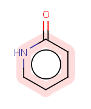
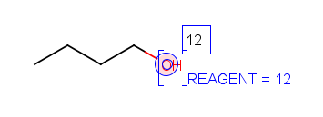
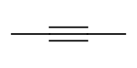
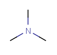
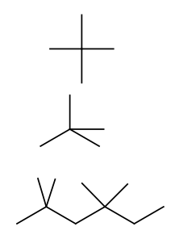
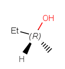
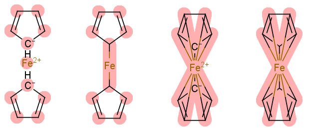
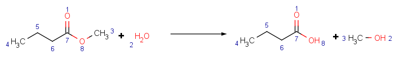
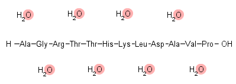
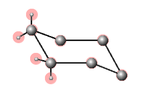

Structure Checker
Structure checker is a tool for filtering drawing mistakes or special structural elements.
Registering a compound in a company's database might limit the user in for example
the introduction of non-natural isotopes, query bonds, species with charge etc.
Structure checker runs a check on the molecule(s) features and lists
them in a separate window, with the option to refresh when you make changes
to your drawing. The Structure checker works with predefined checking elements and
you can choose which ones should be considered when you run a check.
Structure checker's command line interface and API for batch usage requires
a Standardizer Pro licence. This guide refers to the checker available free in
MarvinSketch as an add-on.
abbreviated group alias
aromaticity error atom map
atom value attached data
bond angle bond length
chiral flag error coordination system error
covalent counterion
crossed double bond
empty structure
explicit hydrogen explicit lone pairs
isotope metallocene
missing atom map molecule charge
multicenter multicomponent
OCR error overlapping atoms
overlapping bonds pseudo
query atom query bond
radical rare element
reaction map error ring strain error
solvent star atom
3 dimension valence error
wedge error wiggly double bond
Setting Structure Checker configuration
Before you start using the Stucture Checker, consult the list of
available checkers in the Preferences dialog (Edit -> Preferences -> Checkers tab).

The default list contains checkers in alphabetical order.
Click on the name of the checker to see additional options and select the
needed options by clicking the tick box.
Two types of checkers are listed: error detecting and feature detecting checkers.
Error checkers are looking for chemically wrong molecule parts (e.g. valence errors,
overlapping atoms), while the
feature checkers searches the selected molecule characteristics which
in the specific structures are not considered as an error (e.g. query properties). The
two types are distincted by the addtional 'error' tag and different icons.
Checking order
Some molecule properties might change after fixing an isssue.
You can define a checking sequence by moving up or down the list elements.
The order of the checkers may be important in case you run a Fix all action.
To change the order of the checker items, select the checker from the
list and click the up  or down
or down  icon on the right side of the dialog.
icon on the right side of the dialog.
Add and remove checker items
To discard items from the checking sequence, select the checker and click the
 button on the right. To revert this modification or add new elements to the list, click
the
button on the right. To revert this modification or add new elements to the list, click
the  button on the right and select the checker needed.
button on the right and select the checker needed.
Save and load checker lists
Different checking lists might be needed for different compound families. To
make checking simpler, you can save your checking list to your
computer and open it again if you are editing the same molecule type. Click the
Save button  to save your settings and click the Load button
to save your settings and click the Load button  to open a saved list.
to open a saved list.
Usage
Start Structure Checker
You can open Structure Checker at any stage of your work. As you
click the Check structure icon  in the toolbar or in the Structure menu or left-click the Checker button in the statusbar,
a window will
appear next to the sketching window. The molecule regions are highlighted
on the canvas with a light red color. If you click on any checker
message, the effected area changes color to darker red. If you move the cursor
over one of the affected atoms or bonds, the appropriate checker message is highlighted
in the checker list.
in the toolbar or in the Structure menu or left-click the Checker button in the statusbar,
a window will
appear next to the sketching window. The molecule regions are highlighted
on the canvas with a light red color. If you click on any checker
message, the effected area changes color to darker red. If you move the cursor
over one of the affected atoms or bonds, the appropriate checker message is highlighted
in the checker list.
Recheck the structure
After you have changed the structure (including accepting a fix),
the checker will offer re-checking. Click on the recheck icon
in the Checker window. 
At any point you can allow the Structure checker to fix the issues one
by one or every of them by a single click. Another option is to turn on automatic rechecking: click the Enable
automatic checking in the bottom of the text.
Automatic structure checking
Turn on Automatic checking to follow every drawing step you make by a quick check.
This option is switched on in the Structure menu or right-clicking the Checker
button on the status bar which then becomes colored. In case of an
error a red exclamation mark appears.
Left-clicking on this icon opens the Structure Checker window, where all the
warnings are listed.
While the molecules are scanned for checker issues, a yellow question mark appears on the status bar.
If the molecule is correct, a green check mark appears in the Checker icon on the status bar.
List of available checkers and fixers
abbreviated group alias
aromaticity error atom map
atom value attached data
bond angle bond length
chiral flag error coordination system error
covalent counter ion
crossed double bond
empty structure
explicit hydrogen explicit lone pairs
isotope metallocene
missing atom map molecule charge
multicenter multicomponent
OCR error overlapping atoms
overlapping bonds pseudo
query atom query bond
radical rare element
reaction map error ring strain error
solvent star atom
3 dimension valence error
wedge error wiggly double bond
- Abbreviated Group
-
- Checker searches for abbreviated groups in the structure, contracted, expanded or both.
- Fixer offers ungrouping abbreviated groups; expanding abbreviated groups; contracting abbreviated groups.
Example: ungroup a contracted and an expanded phenyl group.
| Warning: |
 |
| Fix: |
 |
Notes: If attachment point is not connected to any atom, ungrouping
removes attachment points of the abbreviated group and adds an implicit hydrogen.
- Alias
-
- Checker searches for aliases in the structure.
- Fixer offers converting the alias to atom if the alias value corresponds to an element (e.g. Ar);
converting the alias to abbreviated group if the alias values corresponds to a group in the abbeviated group list;
removing alias (revealing the atom under the alias);
or deleting the alias atom.
Example: convert a methoxy group defined as an alias to an abbreviated group.
| Warning: |
 |
| Fix: |
 |
Note: The abbreviated group is linked correctly to the chain after the fix, i.e. bond through the oxygen atom.
Example: remove the NH2 alias from the carbon atom.
| Warning: |
 |
| Fix: |
 |
Note: alias only covers the atom, and fixer removes this alias from the original atom.
- Aromaticity Error
-
- Checker searches for aromatic systems that can't be
dearomatized or rearomatizing with the given method does not reproduce the initial molecule.
Options: choice between basic, general or loose aromatization methods.
- Fixer offers rearomatizing or dearomatizing the aromatic system.
Example: the 2-pyridone aromatized in general mode is corrected after a checking of aromatization in basic mode.
| Warning: |
 |
| Fix: |
 |
Notes: In this case, both rearomatization and dearomatization fix yields the same structure.
Details on aromaticity detection.
- Atom Map
- Checker searches for atom maps.
- Fixer offers removing atom maps.
Example: remove atom map from a partially mapped ethyl methylether molecule.
| Warning: |
 |
| Fix: |
 |
- Atom Value
- Checker searches for atom values.
- Fixer offers removing atom values or deleting the atom with value.
Example: delete the atom with value 'isotope'.
| Warning: |
 |
| Fix: |
 |
- Attached Data
- Checker searches for attached data.
- Fixer offers removing attached data or deleting the atom with attached data.
Example: removing attached data (reactant=12) from the oxygen atom.
| Warning: |
 |
| Fix: |
 |
- Bond Angle
- Checker searches for bonds NOT matching the following rules:
- Triple bond angle 180° (± 0.5 rad)
|

|
- Double bond angle 120° or 180° (± 0.5 rad)
|

|
- sp2 atom's bond angles 120°
|

|
- sp3 atom's bond angles 90°
or 3 bond angles 120°,
4th bond of an angle of n times 15°;
or a bond angle of 120° and two adjacent angles equal
|

|
- Fixer offers cleaning the structures by 2D cleaner.
Example: cleaning the molecule.
| Warning: |
 |
| Fix: |
 |
Notes: The current version of bond angle checker examines chain bonds of 2D molecules.
Envelope-shaped cyclic compounds are considered as error.
- Bond Length
- Checker searches for bond lengths different than the default setting.
- Fixer offers cleaning the structures by 2D clean.
Example: cleaning the molecule to adjust bond length.
| Warning: |
 |
| Fix: |
 |
Notes: The current version of bond length checker examines chain bonds of 2D molecules.
- Chiral Flag error
- Checker searches for set chiral flags in case of non-chiral molecules and
for absent chiral flags in case of chiral molecules.
- Fixer offers removing or setting the chiral flag.
Example: adding chiral flag to a chiral compound not flagged.
| Warning: |
 |
| Fix: |
 |
- Coordination System error
- Checker searches for errors in the use of coordinative bonds:
- 2 multicenters connected with a bond
- coordinated atom is connected to an atom of the same multicenter with a coordinative bond
- multicenter merged with one of its atoms
- Fixer offers deleting the wrong bond or the multicenter
Example: deleting a coordination bond between two multicenters.
| Warning: |
 |
| Fix: |
 |
- Covalent Counterion
- Checker searches for covalently bound counter ions.
- Fixer offers changing the structure to the ionic form.
Example: converting a covalent sodium alkoxide formula to the ionic form.
| Warning: |
 |
| Fix: |
 |
- Crossed double bond
- Checker searches for crossed double bond types (molecules with unknown or unspecified configuration).
- Fixer offers cleaning the structures by 2D cleans.
Example: changing a crossed double bond to a wiggly double bond.
| Warning: |
 |
| Fix: |
 |
Notes: reverse action of wiggly double bond fixing.
- Empty structure
- Checker searches for empty structure fields (available in multiple structures files).
- Explicit Hydrogen
- Checker searches for explicit hydrogens. Tick options for searching:
- lonely
- isotopic
- charged
- radical
- mapped
- wegded
explicit hydrogens.
- Fixer offers removing explicit hydrogens and the ticked special atoms.
Example: removing explicit hydrogen and isotopic hydrogen atoms.
- Explicit Lone Pairs
- Checker searches for explicitly drawn lone pairs (inserted as Special node from
the Advanced tab of the Periodic Table).
- Fixer offers removing the explicit lone pair.
Example: removing explicit lone pair.
| Warning: |
 |
| Fix: |
 |
- Isotope
- Checker searches for isotopic atoms.
- Fixer offers changing the isotopic atom to the most abundant natural isotope of that element.
Example: removing isotope information.
| Warning: |
 |
| Fix: |
 |
Notes: deuterium and tritium are recognized as symbols D and T, respectively as well.
- Metallocene
- Checker searches for incorrect metallocene representations.
- Fixer offers converting to a valid structure: aromatizing the rings, inserting coordination
bonds, and fixing charge values.
Example: fixing ferrocene structures.
| Warning: |
 |
| Fix: |
 |
- Missing Atom Map
- Checker searches for missing atom maps.
- Fixer offers mapping all atoms in the sketch.
Example: mapping atoms in unmapped molecules.
| Warning: |
 |
| Fix: |
 |
- Molecule Charge
- Checker searches molecules in which total charge is not zero.
- Fixer offers removing the charge by adding or removing hydrogens.
Example: removing charge along with removing a proton.
| Warning: |
 |
| Fix: |
 |
Notes: charge is not checked in reactions. Charged molecules where no hydrogens can be removed, are to be corrected manually.
- Multicenter
- Checker searches for multicenter drawing.
- Fixer offers removing the multicenter from the molecule.
Example: removing multicenter.
| Warning: |
 |
| Fix: |
 |
- Multicomponent
- Checker searches for multiple components in the drawing.
- No fixer is available.
- OCR error
- Checker searches for structures imported incorrectly from optical character recognition procedure.
- Fixer: no fixer is available for this checker.
Example: detecting OCR errors.
| Warning: |
 |
- Overlapping Atoms
- Checker searches for overlapping atoms: atoms closer than the pre-set percentage of the default atom radius.
- Fixer offers setting or removing the chiral flag.
Example: adding chiral flag to a chiral compound.
- Overlapping Bonds
- Checker searches for overlapping bonds: bonds crossing each other or bonds closer to each other than the set minimal value.
- Fixer offers cleaning the molecule (2D).
Example: cleaning the molecule.
| Warning: |
 |
| Fix: |
 |
Notes: bridged polycycles are cleaned as far as their structure allows it, and the overlapping bonds warning will remain.
- Pseudo Atom
- Checker searches for pseudo atoms in the molecule.
- Fixer offers
- converting to abbreviated group if the name is in the abbreviated group list (e.g. Et for ethyl);
- converting to a carbon atom;
- deleting atom.
Example: converting a pseudo atom to a carbon atom.
| Warning: |
 |
| Fix: |
 |
- Query Atom
- Checker searches for query atoms.
- No fixer for this feature.
Example: finding query atoms.
| Warning: |
 |
- Query Bond
- Checker searches for query bonds.
- No fixer for this feature.
Example: finding query bonds.
| Warning: |
 |
- Radical
- Checker searches for radical information on molecules.
- Fixer offers removing the radical information.
Example: removing wrong radical from acetate.
| Warning: |
 |
| Fix: |
 |
- Rare element
- Checker searches for rare elements in the structures. Atoms generally present in organic compounds are: H, Li, Na, K, Mg, Ca, B, C, N, O, F, Cl, Br, I, Al, P, S, Cr, Mn, Fe, Co, Ni, Cu, Zn. Any elements outside this selection are considered rare elements.
- No fixer for this feature.
Example: filtering the praseodymium as a substitution for a propyl group.
| Warning: |
 |
- Reaction Map error
- Checker searches for incomplete reaction map.
A reaction with two or less atom maps (both on the reactant and the product side)
is considered an incompletely mapped reaction.
- Fixer offers mapping the reaction.
Example: mapping a partially mapped reaction.
| Warning: |
 |
| Fix: |
 |
- Ring strain error
-
- Checker searches for trans double bonds in bridged rings.
- Fixer offers transforming to cis configuration.
Example: cleaning the molecule.
| Warning: |
 |
| Fix: |
 |
- Solvent
- Checker searches in the molecule file for fragments defined as solvent molecules if more than 1 fragment is present. The list is
customizable and is found in a configuration file.
- Fixer offers removing solvent fragments in case only one type of solvent is present.
Example: removing water molecules.
| Warning: |
 |
| Fix: |
 |
The default solvents are: water, methanol, ethanol, propan-1-ol propan-2-ol, butan-1-ol, formic
acid, acetic acid, pentane, hexane, benzene, methylbenzene, ethoxyethane, trichloromathane,
ethyl acetate, dichloromethane, propan-2-one, acetonitrile, N-methylacetamide, methanesulfonylmethane,
oxolane, heptane, 2-mezhylpropan-2-ol, butan-2-one, cyclohexane, cycloheptane, 1,2-dichloroethane,
2-(propan-2-yloxy)propane, 1,2-dimethoxyethane, N,N-dimethylacetamide, pyridine, 1,2-dimethylbenzene,
2-methyoxy-2-methylpropane
- Star Atom
- Checker searches for star atoms (inserted as Special node from
the Advanced tab of the Periodic Table).
- Fixer offers removing the star atom.
Example: deleting the star atom.
| Warning: |
 |
| Fix: |
 |
- Three Dimension
- Checker searches for 3rd dimension (Z) coordinates.
- Fixer offers 2D cleaning.
Example: cleaning the cyclohexane in 2D.
| Warning: |
 |
| Fix: |
 |
- Valence error
- Checker searches for valence errors.
- Fixer offers removing explicit hydrogens if applicable.
Example: setting the charge on a quaternary ammonium ion; removing a hydrogen from the secondary ammonium ion with no charge set.
Notes: valence errors with no removable hydrogens have to be corrected manually.
- Wedge error
- Checker searches for erratic wedge bonds.
- Fixer offers removing all wedge bonds and replacing them with a single bond.
Example:
| Warning: |
 |
| Fix: |
 |
Notes: some symmetric structures are not recognized by the checker.
Wiggly Double Bond
- Checker searches for wiggly double bond (molecules with unknown or unspecified configuration).
- Fixer offers changing to crossed double bond type.
Example: changing a wiggly double bond to a crossed double bond.
| Warning: |
 |
| Fix: |
 |
Notes: reverse action of crossed double bond fixing.
abbreviated group alias
aromaticity error atom map
atom value attached data
bond angle bond length
chiral flag error coordination system error
covalent counter ion
crossed double bond
empty structure
explicit hydrogen explicit lone pairs
isotope metallocene
missing atom map molecule charge
multicenter multicomponent
OCR error overlapping atoms
overlapping bonds pseudo
query atom query bond
radical rare element
reaction map error ring strain error
solvent star atom
3 dimension valence error
wedge error wiggly double bond